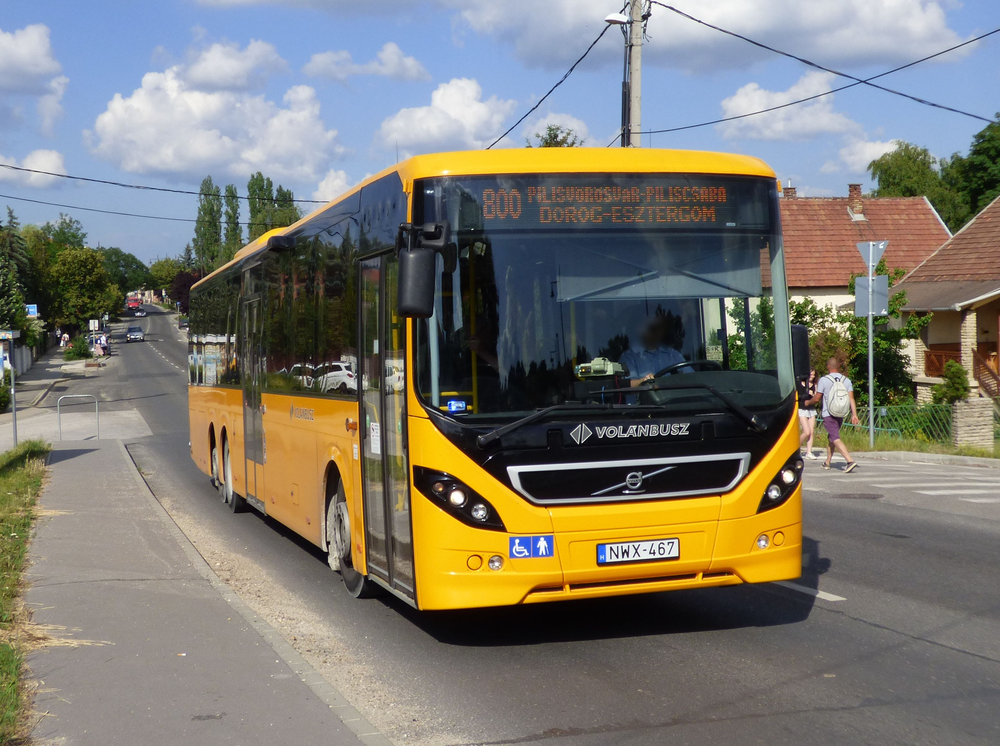
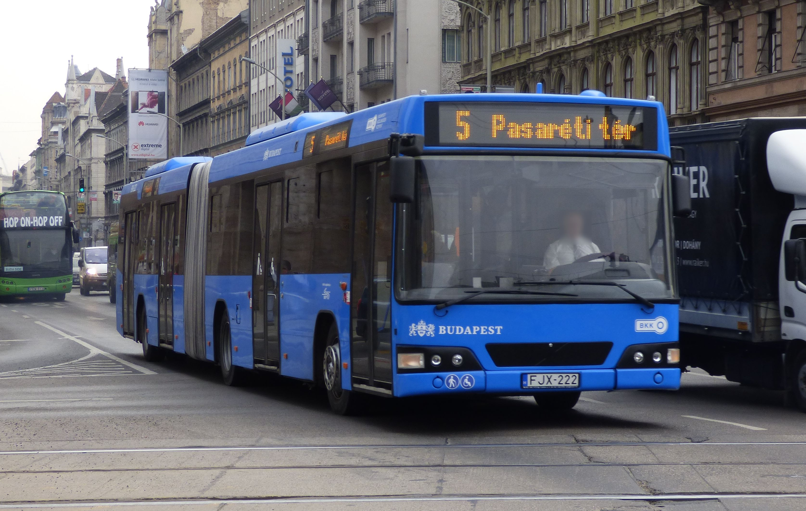

Buszmenetrend

- Budapest–Dunakeszi–Vác300, 302, 303 Füzetbe
- Göd–Dunakeszi, Barátság u.–Budapest301 Füzetbe
- Budapest–Dunakeszi, Auchan–Dunakeszi, Horányi rév305-306 Füzetbe
- Budapest–Dunakeszi–Fót–Budapest308-309 Füzetbe
- Budapest–Fót–Dunakeszi–Budapest310-311 Füzetbe
- Budapest–Rád–Penc–Nézsa312 Füzetbe
- Budapest–Őrbottyán–Vácrátót–Püspökszilágy313 Füzetbe
- Budapest–Őrbottyán–Vácrátót–Vácduka–Vác314 Füzetbe
- Budapest–Őrbottyán–Váchartyán–Püspökszilágy315 Füzetbe
- Budapest–Őrbottyán–Galgagyörk–Acsa–Bercel/Nógrádkövesd316 Füzetbe
- Gödöllő–Mogyoród–Fót–Budapest317 Füzetbe
- Budapest–Fót–Veresegyház–Galgamácsa318-319 Füzetbe
- Budapest–Fót–Mogyoród320 Füzetbe
- Budapest–HUNGARORING–Mogyoród321 Füzetbe
- Budapest–Szada–Veresegyház–Őrbottyán396-399 Füzetbe
- Budapest–Gödöllő–Bag–Tura400, 402 Füzetbe
- Budapest–Gödöllő–Hatvan410, 412 Füzetbe
- Budapest–Hatvan–Boldog–Jászfényszaru414 Füzetbe
- Budapest–Gödöllő–Aszód–Verseg–Kálló–Erdőkürt422, 424 Füzetbe
- Budapest–Aszód–Szirák–Bér430, 438 Füzetbe
- Budapest–Aszód–Szirák–Buják432, 434, 435 Füzetbe
- Budapest–Aszód–Vanyarc–Bér/Buják436, 437 Füzetbe
- Budapest–Aszód–Palotás–Hollókő439 Füzetbe
- Budapest–Gödöllő–Tóalmás440 Füzetbe
- Budapest–Gödöllő–Jászfényszaru441, 442 Füzetbe
- Budapest(Cinkota)–Nagytarcsa–Budapest(Cinkota)480 Füzetbe
- Nagytarcsa–Budapest (Rákoscsaba)–Nagytarcsa482 Füzetbe
- Budapest–Pécel–Isaszeg–Dány484 Füzetbe
- Budapest–Tápiószecső–Tápiószentmárton/Tóalmás–Szentlőrinckáta485-486 Füzetbe
- Kistarcsa–Rákoskeresztúr–Maglód–Gyömrő–Monor504 Füzetbe
- Budapest–Maglód–Gyömrő–Monor505-506, 508 Füzetbe
- Budapest–31-es út–Maglód–Gyömrő–Monor509-510 Füzetbe
- Budapest-Ecser-Maglód-Gyömrő-Maglód-Ecser-Budapest575 Füzetbe
- Budapest-Vecsés-Gyál-Vecsés-Budapest576-578 Füzetbe
- Budapest–Üllő–Monor580-581 Füzetbe
- Budapest–Inárcs–Újhartyán–Újlengyel607-608 Füzetbe
- Budapest–Alsónémedi–Dabas626 Füzetbe
- Budapest–Alsónémedi626-636 Füzetbe
- Dabas–Alsónémedi–Budapest627 Füzetbe
- Budapest–Dabas–Tatárszentgyörgy–Kerekegyháza628 Füzetbe
- Budapest–Dabas–Kunpeszér629 Füzetbev
